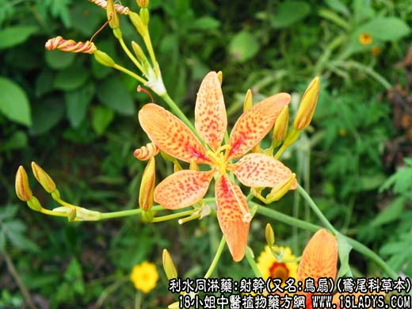

【中药概述】
射干，又名:乌扇,乌蒲,黄远,乌萐,夜干,乌翣,乌吹,草姜,鬼扇,凤翼,扁竹根,仙人掌,紫金牛,野萱花,扁竹,地萹竹,较剪草,黄花扁蓄,开喉箭,黄知母,冷水丹,冷水花,扁竹兰,金蝴蝶,金绞剪,紫良姜,铁扁担,六甲花,扇把草,鱼翅草,山蒲扇,剪刀草,老君扇,高搜山,凤凰草，鸢尾科草本，属利水同淋药。
【射干_射干的功效与作用_中药射干_射干种植】
别名：扁畜、较剪草头、草骨头。
植物名：射干。
生长环境：本品为直立，丛生草本。栽培于园地，亦有野生于山间。
分布：日本和我国各省均有栽培。
入药部分：根。
采集期：全年。
自采地点：家种。
性味：性微凉，味平淡。
功能：利尿，通淋。
主治、用量和用法：1、外感发热：干用5钱至1两，清水煎服；2、热病后食做过早复热症：干用5钱至1两，清水煎服；3、小便刺痛：白浊、淋浊：干用1至2两，猪小肚1个，清水煎服。
按：1、广东习惯以射干根成为扁畜，射干苗称为射干；民间医生以射干，扁畜混为一种，查两种植物不同书籍，《本草》论其功用，没有相同之处。论射干的材料有：“俗呼扁竹谓其叶扁生，而根如竹也。”“扁竹”与“扁畜”谐音，可能为后人混称之源。
2、另有一种较剪草为毒鼠药，在植物学上称为“山猫儿”，与本品不同。